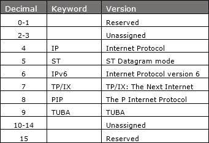

IPv6 Tutorial - Overview
Internet Protocol version 6 is a new addressing protocol designed to incorporate all the possible requirements of future Internet known to us as Internet version 2. This protocol as its predecessor IPv4, works on the Network Layer (Layer-3). Along with its offering of an enormous amount of logical address space, this protocol has ample features to which address the shortcoming of IPv4.
Why New IP Version?
So far, IPv4 has proven itself as a robust routable addressing protocol and has served us for decades on its best-effort-delivery mechanism. It was designed in the early 80’s and did not get any major change afterward. At the time of its birth, Internet was limited only to a few universities for their research and to the Department of Defense. IPv4 is 32 bits long and offers around 4,294,967,296 (232) addresses. This address space was considered more than enough that time. Given below are the major points that played a key role in the birth of IPv6:
- Internet has grown exponentially and the address space allowed by IPv4 is saturating. There is a requirement to have a protocol that can satisfy the needs of future Internet addresses that is expected to grow in an unexpected manner.
- IPv4 on its own does not provide any security feature. Data has to be encrypted with some other security application before being sent on the Internet.
- Data prioritization in IPv4 is not up to date. Though IPv4 has a few bits reserved for Type of Service or Quality of Service, but they do not provide much functionality.
- IPv4 enabled clients can be configured manually or they need some address configuration mechanism. It does not have a mechanism to configure a device to have globally unique IP address.
Why Not IPv5?
Till date, Internet Protocol has been recognized has IPv4 only. Version 0 to 3 were used while the protocol was itself under development and experimental process. So, we can assume lots of background activities remain active before putting a protocol into production. Similarly, protocol version 5 was used while experimenting with the stream protocol for Internet. It is known to us as Internet Stream Protocol which used Internet Protocol number 5 to encapsulate its datagram. It was never brought into public use, but it was already used.
Here is a table of IP versions and how they are used:

Brief History
After IPv4’s development in the early 80s, the available IPv4 address pool begun to shrink rapidly as the demand of addresses exponentially increased with Internet. Taking pre-cognizance of the situation that might arise, IETF, in 1994, initiated the development of an addressing protocol to replace IPv4. The progress of IPv6 can be tracked by means of the RFC published:
- 1998 – RFC 2460 – Basic Protocol
- 2003 – RFC 2553 – Basic Socket API
- 2003 – RFC 3315 – DHCPv6
- 2004 – RFC 3775 – Mobile IPv6
- 2004 – RFC 3697 – Flow Label Specification
- 2006 – RFC 4291 – Address architecture (revision)
- 2006 – RFC 4294 – Node requirement